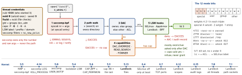
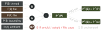

linux · folio
In one line: The kernel decides every access from the calling thread’s credentials:
seccomp filters the syscall at entry, DAC (mode bits + ACL, against the
fsuid) says yes or no, a capability may override a DAC “no”, and the
LSMs (SELinux, AppArmor, Landlock, Yama …) can, by design, mostly only add a “no”. Root
is uid 0 plus a full capability set — both can be taken away. sudo, run0, PAM and sshd are
the user-space doors that hand them out.
Download PDF Print view LaTeX source

Credentials
- real uid = who owns the process · effective = privileges · saved = euid copied at
execve (drop, then regain) · fsuid (Linux-only) follows euid, used for files. /proc/<pid>/status Uid: real, effective, saved, fs.
setuid(2) with CAP_SETUID sets real + saved too — no way back (seteuid drops for a while); without it euid may only become real or saved. Check its return value.- Groups are set at login and inherited: a new membership reaches new logins only.
Mode bits, umask, special bits
- One class decides: fsuid = owner → owner bits only; else a group matches → group bits; else other. Mode
0077 locks the owner out.
- Directory:
r list · w create / delete / rename (with x) · x search. Deleting needs w+x on the directory, nothing on the file.
- umask clears bits from the
open / mkdir mode: 0666 & ~022 = 0644, dirs 0755; 077 → 600 / 700; ignored under a default ACL; Umask: in status.
- setuid 4000: exec runs with the file owner’s euid — ignored for scripts, on
nosuid mounts, under no_new_privs, when ptraced. AT_SECURE exec: LD_LIBRARY_PATH stripped, LD_PRELOAD only setuid libs from standard dirs.
- setgid 2000: exec → egid; on a dir, new files take its group, new subdirs keep the bit. sticky 1000 on a dir: only the file’s owner, the dir’s owner or a privileged process may rename / delete (
/tmp).
- An unprivileged
write clears setuid / setgid; chown clears them, root too.
POSIX ACLs
user:: · user:alice: · group:: · group:dev: · mask:: · other::; checked owner → named user → groups → other, users + groups ANDed with the
mask. ls -l’s group bits are the mask (chmod g= edits it). A dir’s default ACL is copied to new entries.
Capabilities — root in 41 pieces (0–40)
Per thread: Permitted (ceiling) · Effective (checked) · Inheritable · Bounding (drop-only limit) · Ambient (4.3: kept across exec of a plain program). Files: P, I + an effective bit in the security.capability xattr. At execve:

Root: the file’s I, P count as all ones, E set ⇒ full set (SECBIT_NOROOT stops it). NET_BIND_SERVICE: ports below ip_unprivileged_port_start (per netns, 1024; 0 = none privileged) · DAC_OVERRIDE: skip rwx (exec still needs an x bit) · DAC_READ_SEARCH: read files, search dirs · FOWNER: act as owner, ignore sticky · SYS_ADMIN: “plausibly called the new
root”. getcap, capsh --decode=, CapEff: in status.
Self-sandboxing: no_new_privs (NNP), seccomp-bpf, Landlock
prctl(PR_SET_NO_NEW_PRIVS): execve can no longer grant — setuid, setgid, file caps ignored; inherited, never unset. Needed for unprivileged seccomp and Landlock.- seccomp-bpf: classic BPF over
nr, arch, ip, 6 raw args — no pointer reads; “isn’t a sandbox”. Precedence: KILL_PROCESS > KILL_THREAD > TRAP > ERRNO > USER_NOTIF > TRACE > LOG > ALLOW; of several filters the highest wins. Inherited, kept across exec; filters only accumulate. Check arch — and a deny-list must cover x32 numbers too.
- Landlock: unprivileged LSM — a ruleset (paths, ports, scopes) +
landlock_restrict_self() binds the process and its children; ≤16 layers.
LSMs — who restricts whom
| SELinux | labels user:role:type:level in an xattr, type enforcement by
admin policy; enforcing · permissive (or per domain). RHEL, Fedora, Android (enforced since 5.0),
openSUSE Tumbleweed (Feb 2025). Runtime disable gone (6.4): selinux=0 at boot.
ls -Z · ausearch -m AVC · semanage fcontext + restorecon · setsebool -P |
| AppArmor | per-program profiles attached by path; enforce · complain ·
kill · unconfined · prompt. Ubuntu, Debian (default since 10). Ubuntu 24.04: unprivileged user
namespaces get no caps unless a profile allows userns. aa-status · aa-logprof |
| Yama | ptrace_scope: 0 same uid · 1 descendants · 2 CAP_SYS_PTRACE · 3 none,
until reboot |
| lockdown | blocks /dev/mem, unsigned kexec + modules, kprobes, BPF kernel reads |
capability first, then minor LSMs, at most one “major”: /sys/kernel/security/lsm, order via lsm=. Also Landlock, BPF (eBPF on hooks), Smack, TOMOYO.
sudo, sudo-rs, run0
visudo edits /etc/sudoers + sudoers.d/: user host=(runas) cmds; the last matching entry wins, not the most specific. env_reset on, use_pty on (1.9.14), secure_path off upstream. sudo -l: your rights.- NOPASSWD on an editor, pager,
find, tar, an interpreter = a root shell (GTFOBins). Wildcards match spaces; ALL, !/bin/sh “rarely works”. sudoedit: edits a user-owned temp copy, copies it back.
- CVE-2021-3156 “Baron Samedit”: heap overflow, any local user → root, no sudoers entry needed (to 1.9.5p1). CVE-2025-32463:
-R chroot + a planted nsswitch.conf → root (1.9.14–1.9.17; chroot deprecated).
- sudo-rs (Rust) is
sudo on Ubuntu 25.10 + 26.04 LTS; the original is sudo.ws. run0 (systemd 256, Jun 2024): no setuid — polkit authorises, the service manager starts a transient unit with a fresh context and pty.
PAM
/etc/pam.d/<service>: stacks auth · account · password · session. required = fail, but run the rest · requisite = fail now · sufficient = succeed now if no earlier required failed · optional = counts only if alone · include, substack; or [success=ok default=bad]. pam_faillock: 3 failures / 15 min → 10 min lock, root only with even_deny_root (pam_tally2 removed, Linux-PAM 1.5.0, 2020). Hashes in /etc/shadow: $y$ yescrypt (Debian default since 11) · $6$ acceptable · $1$ not for new hashes.
OpenSSH server
First obtained value wins: Debian/Ubuntu Include sshd_config.d/*.conf at the top, so a drop-in beats the main file. sshd -t checks; sshd -T -C user=… prints the effective config. Defaults: PermitRootLogin prohibit-password, PasswordAuthentication yes, KbdInteractiveAuthentication yes.
| 9.5 2023-10 | ssh-keygen makes Ed25519 keys by default |
| 9.8 2024-07 | fixes CVE-2024-6387 “regreSSHion” (8.5p1–9.7p1: signal race, root RCE, glibc
Linux); sshd-session split; PerSourcePenalties on |
| 10.0 2025-04 | DSA removed; mlkem768x25519-sha256 default key exchange;
sshd-auth split; no finite-field DH in sshd |
| 10.1 2025-10 | client warns on non-post-quantum key exchange |
| 10.6 2026-10 | sshd logs it too (WarnWeakCrypto); ssh-mldsa44-ed25519 signatures enabled |
Audit
auditd → /var/log/audit/audit.log; ausearch -k, aureport. -a always,exit -F arch=b64 -S execve -k exec; watch files as -F path=… -F perm=wa (-w is deprecated: slow). auid = login uid from pam_loginuid, unchanged by sudo / su — who really did it. -e 2 locks rules until reboot.
Traps
mv keeps the SELinux label (user_home_t in /var/www → denied); cp takes the target’s default. restorecon, never setenforce 0.
Related: namespaces-cgroups-containers (caps, seccomp, user namespaces) · systemd-deep
(sandboxing directives) · linux-filesystems-storage (nosuid mounts) ·
linux-boot-process · os-fundamentals · macos-security-architecture ·
post-quantum-crypto (ML-KEM) · TLS 1.3 & PKI — handshake, trust, pinning